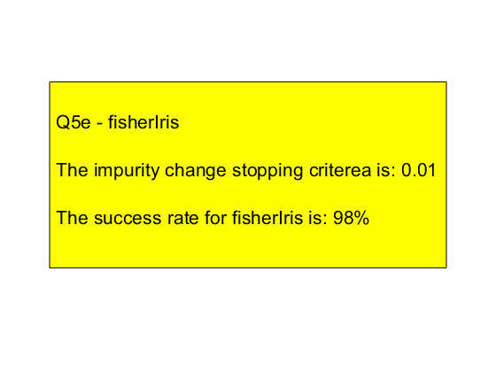

Contents
clear
Question 5 d - creating the decision tree - 'tree' in a struct array
load fisheriris
maxLen = 100;
eps=0.01;
dim=size(meas);
perms=randperm(dim(1));
trainInd=perms(1:dim(1)/2);
Xt=meas(trainInd,:);
y=species(trainInd,:);
tree=struct('feature', cell(1, maxLen),'leaf', cell(1, maxLen), 'class', cell(1, maxLen) ,'alpha', cell(1, maxLen), 'data', cell(1, maxLen), 'tag', cell(1, maxLen) );
tree(1).leaf=0;
tree(1).class=0;
tree(1).alpha=NaN;
tree(1).data=Xt;
tree(1).tag=string(y);
for i=1:maxLen
[Xy,Yy,Xn,Yn,isLeaf,feature,alpha,tag] = splitNode(tree(i).data,tree(i).tag,eps);
if isLeaf~=0
tree(i).leaf=1;
tree(i).class=tag;
tree(i).alpha=NaN;
tree(i).data=NaN;
tree(i).tag=tag;
else
tree(i).alpha=alpha;
tree(i).feature=feature;
tree(i).leaf=-1;
tree(i).class=-1;
tree(i*2).data=Xn;
tree(i*2).tag=Yn;
tree(i*2+1).data=Xy;
tree(i*2+1).tag=Yy;
tree(i).data=NaN;
tree(i).tag=NaN;
end
end
Question 5 e - using the tree (named "tree") with iris data - after training it with half the data data.
f=0;
c=0;
for i=1:dim(1)
x=meas(i,:);
y=species{i};
in=1;
f=0;
while f==0
if tree(in).leaf==1 && (checkStr(tree(in).tag)==1)
if tree(in).tag==y
c=c+1;
end
f=1;
else
feat=tree(in).feature;
if x(feat)>tree(in).alpha
in=in*2+1;
else
in=in*2;
end
end
end
end
result=c/dim(1);
figure(1)
strH='Q5e - fisherIris';
str1=['The impurity change stopping criterea is: ',num2str(eps)];
str2=['The success rate for fisherIris is: ',num2str(result*100),'%'];
t1 = annotation('textbox','string',{' ',strH,' ',str1,' ',str2 },'VerticalAlignment','top');
t1.FontSize = 16;
t1.Position=[0.1 0.28 0.8 0.5];
t1.BackgroundColor='yellow';
t1.Color=[0 0 0];
disp('finish');
finish
